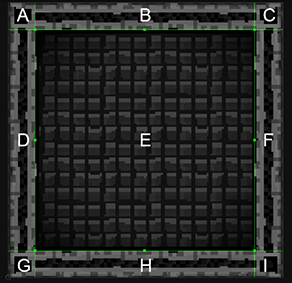
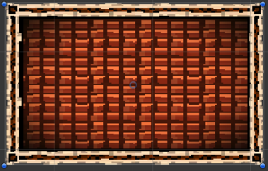
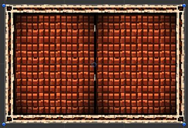

Description 描述
The current draw mode of the Sprite Renderer.
When the drawMode is set to SpriteDrawMode.Sliced or SpriteDrawMode.Tiled, the SpriteRenderer
will render the sprite as a 9-slice image.

A 9-Slice image is where an image is divided into 9 portion.
The A, C, G and I section sizes will not be affected by the dimension of set by SpriteRenderer.size.
The B and H section will be repeated horizontally.
The D and F section will be repeated vertically.
The E section will be stretched or repeated both horizontally or vertically.
When set to SpriteDrawMode.Sliced, the B, D, E, F, H section will be stretched to fit the dimension

When set to SpriteDrawMode.Tiled, the B, D, E, F, H section will be repeated to fit the dimension
